NTU Game Lab
NTU Game Lab is a game development club for artists, writers, programmers and other creative people to share, discuss and make games! While it is not affiliated with NTU, the club is based in the ADM campus and made up of NTU students. We welcome any NTU student to join us for our weekly Studio sessions in ADM! Find out more on how you can join us in the Contact section, or learn more about the activities we conduct here in the Game Lab Events section.
ANNOUNCMENT: We will resume weekly online discussions once the new semester starts.
Upcoming Events
Studio Sessions
During the current school term, we will be conducting weekly Studio Sessions where we play, discuss and critique our internally selected game of the week.
Events
Studio Sessions
During the school term, we conduct weekly Studio Sessions where we play, discuss and critique our internally selected game of the week! Take a look at an overview of our sessions so far.
-
Oct 27 2020
The Last of Us 1 & 2
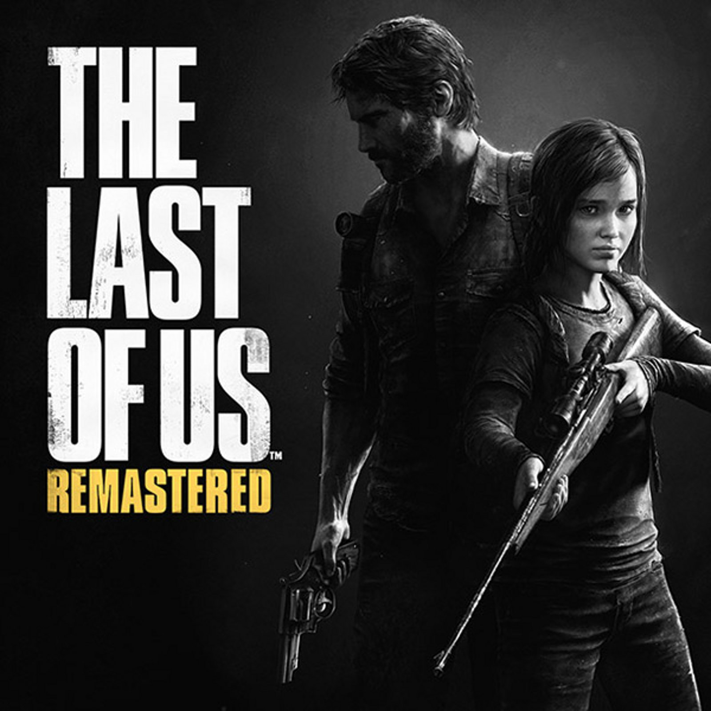 
Name: The Last of Us
Company: Naughty Dog
Release date: 2013
Platforms: PlayStation 3, PlayStation 4
Name: The Last of Us Part 2
Company: Naughty Dog
Release date: 2020
Platforms: PlayStation 4
[This session was held online in Discord] It is interesting how the two games build on each other to build a complex and brutal story in the post apocalyptic setting. The last of us 2 uses game mechanics and storytelling to illustrate the cycle of violence. The evolution of minigame like the guitar playing mini through points of the games is also used to convey emotions of loss and healing.
-
Oct 21 2020
Night in the Woods & Kentucky Route Zero
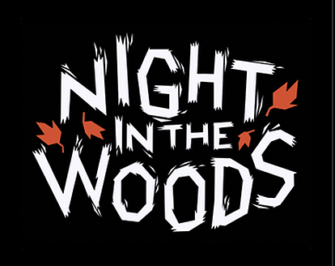 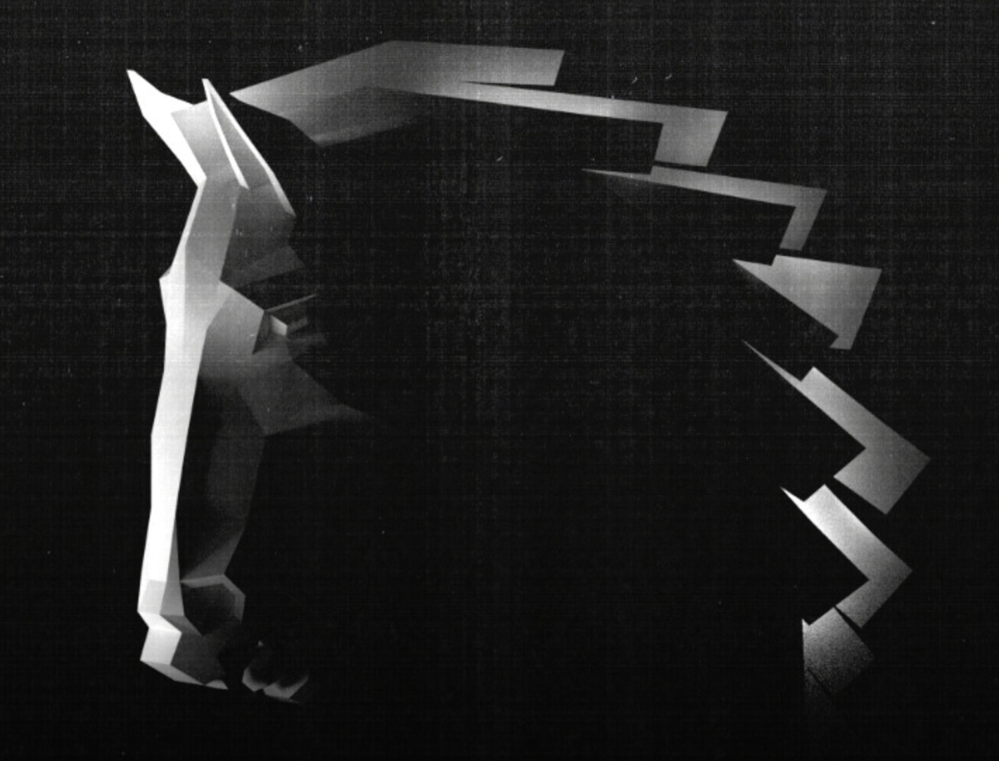 Name: Night in the Woods
Company: Infinite Fall
Release date: 2017
Platforms: PC, PlayStation 4, Xbox One, Nintendo Switch
Name: Kentucky Route Zero
Company: Cardboard Computer
Release date: 2013
Platforms: PC, PlayStation 4, Xbox One, Nintendo Switch
[This session was held online in Discord] This week, the group discussed narrative plus mechanics in the games' use of sound, textboxes and choices to bring out their overarching moods. And how games can be designed to achieve goals while not going over their budget.
-
Oct 14 2020
XCOM:eu & Invisible, Inc.
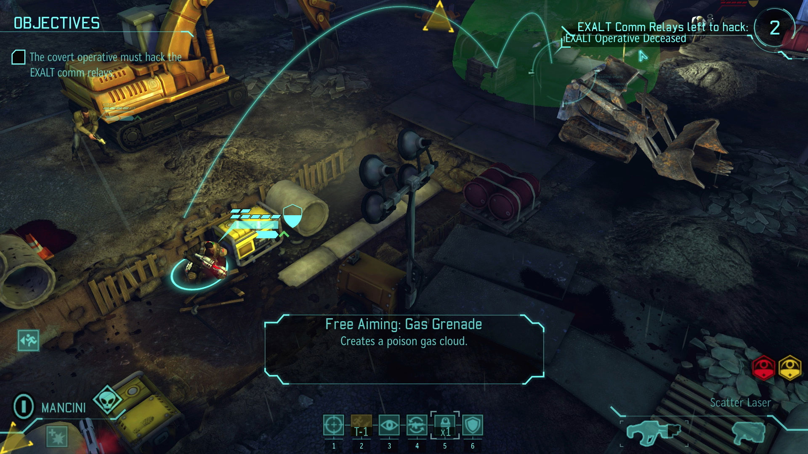 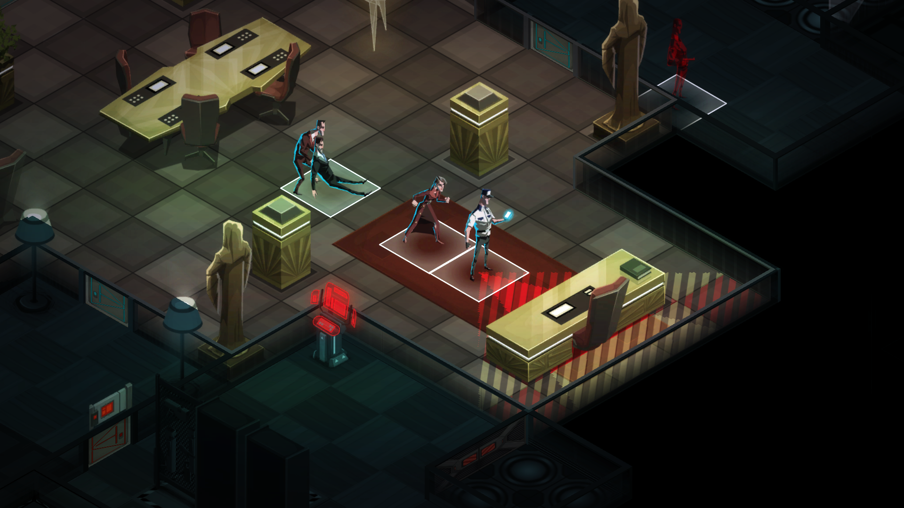 Name: XCOM: Enemy Unknown
Company: Firaxis Games
Release date: 2012
Platforms: PC, PlayStation 4, Xbox One, Nintendo Switch
Name: Invisible, Inc.
Company: Klei Entertainment
Release date: 2015
Platforms: PC, PlayStation 4, Nintendo Switch
[This session was held online in Discord] The turn-based strategy genre have a wild range of specific mechanics. These two games both use the cover system, but one gives significantly more control to the player. We also discussed how one genre can have many stylistic extremes, with Mario + Rabbids Kingdom Battle also using similar mechanics.
-
Oct 7 2020
Valorant & CS:go
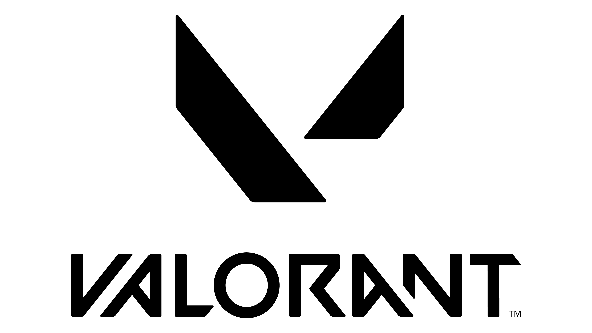 Name: Valorant
Company: Riot Games
Release date: 2020
Platforms: Microsoft Windows
Name: Counter-Strike: Global Offensive
Company: Valve
Release date: 2012
Platforms: PC, PlayStation 3, Xbox 360
[This session was held online in Discord] This very technical session focused in depth about pro strategies in these two esports games, and how their different mechanics effect player's demographic and play styles in the competitive scene.
-
Sept 23 2020
Ori & Hollow Knight


Name: Ori and the Blind Forest
Company: Moon Studios
Release date: 2015
Platforms: PC, Xbox One, Nintendo Switch
Name: Hollow Knight
Company: Team Cherry
Release date: 2017
Platforms: PC, PlayStation 4, Xbox One, Nintendo Switch
[This session was held online in Discord] With both games relying heavily on colour coding, too much colours could result in potential noise for game. Differences in the gameplay experience led to a debate on the utility of a small cast of characters vs a larger one. We observed that Ori's more flowy controls match its larger (scaled to character) areas and the knight's precise controls to a smaller area. Finally, we examined how the two games links their health system to other mechanics. Namely magic vs saving and magic.
-
Sept 16 2020
Semblance & The Floor is Jelly

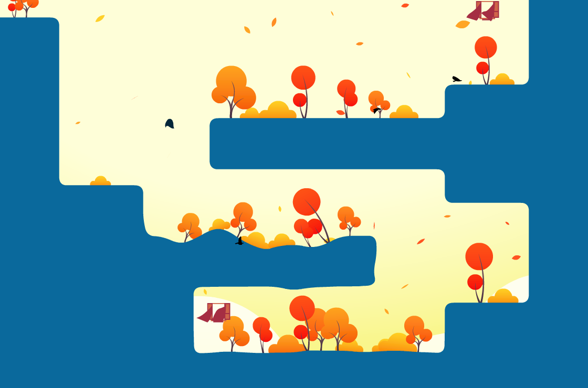 Name: Semblance
Company: Nyamakop
Release date: 2018
Platforms: PC, Nintendo Switch
Name: The Floor is Jelly
Company: Auren Snyder
Release date: 2018
Platforms: PC
[This session was held online in Discord] These are both puzzle platformers in the itch.Io BLM bundle who makes sure of malleable environment as a main mechanic. However, the discussion brought about the different levels of engagement from the player to the game due to the more limited amount of randomness and alternative solutions in Semblance compared to The Floor is Jelly.
-
Sept 9 2020
>Observer_ & Detention
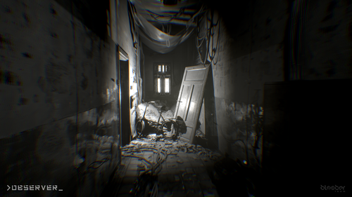 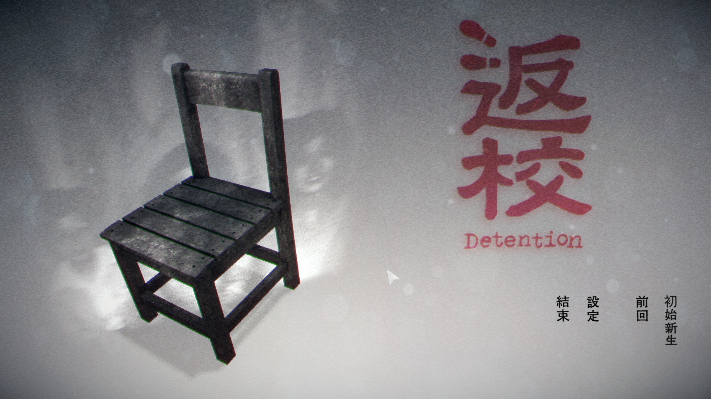 Name: >Observer_
Company: Bloober Team
Release date: 2017
Platforms: PC, PlayStation 4, Xbox One, Nintendo Switch
Name: Detention
Company: Red Candle Games
Release date: 2017
Platforms: PC, PlayStation 4, Nintendo Switch
[This session was held online in Discord] These two horror games well reflects aspects of their individual cultures, harnessing paranoia and fear we feel in our real lives to make us feel afraid while playing the games. It was especially interesting to discuss the impact of culturally relevant events reflected in these games as part of its narratives.
-
Sept 2 2020
A Dark Room & Candy Box
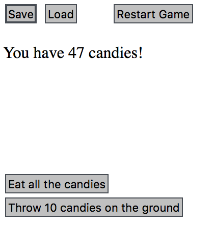 Name: A Dark Room
Company: Doublespeak Games
Release date: 2013
Platforms: PC
Name: Candy Box
Company: Aniwey
Release date: 2013
Platforms: PC
[This session was held online in Discord] Despite the lack of graphics , sounds and feedback, these web games are still captivating and engaging to the audience. As text-based real-time idle games, we discussed how new players might not be patient enough to wait for new progress. Due to its limited medium, the lack of feedback in combat for these games were also a factor that decreased its attractiveness to players now.
-
Aug 26 2020
Gris & Transistor
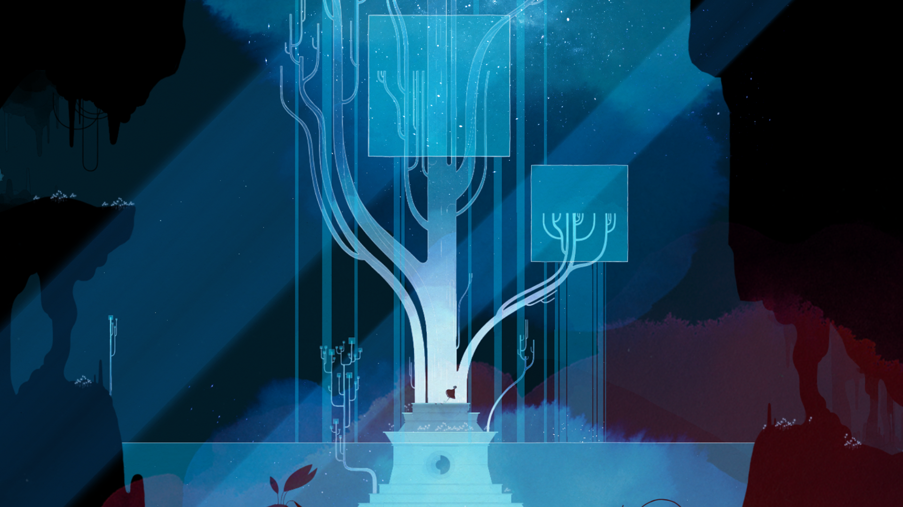 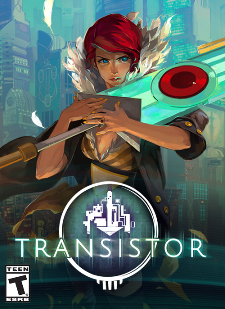 Name: Gris
Company: Nomada Studios
Release date: 2018
Platforms: PC, Nintendo Switch, PlayStation 4
Name: Transistor
Company: Supergiant Games
Release date: 2017
Platforms: PlayStation 4, Nintendo Switch, PC
[This session was held online in Discord] This session was spent discussing how the two games used the silent protagonist trope as a narrative focal points for their games. The abstract world of Gris allows for a much lighter cognitive load than the action-packed, colourful world of transistor-- each art style and game mechanic suiting their individual emotional landscape. We also exchanged thoughts on the two game's endings and our own experiences playing these games. In conclusion, Gris is a relaxing game with tense moments, while transistor is a tense game with relaxing moments.
-
Aug 19 2020
Fall guys & overcooked
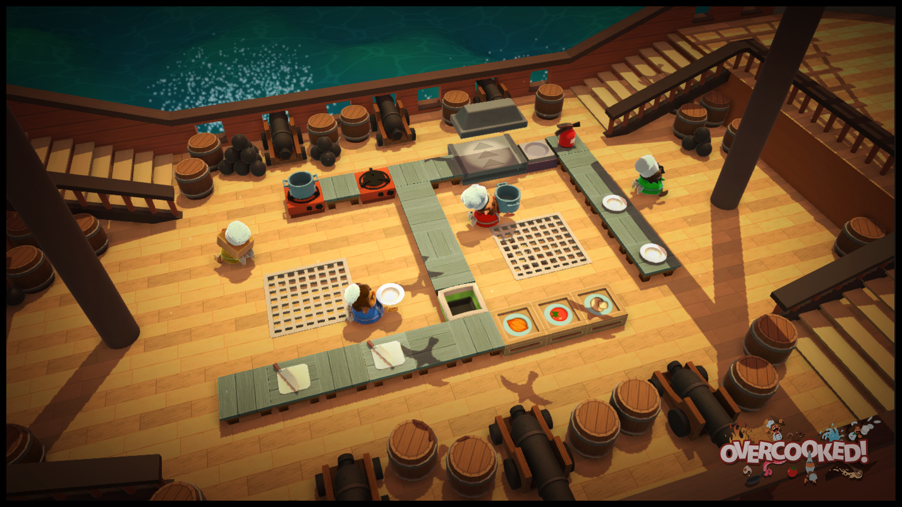 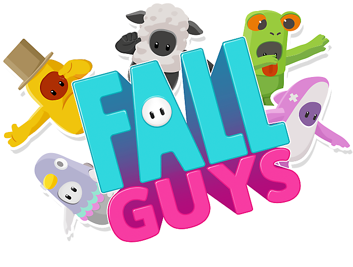 Name: Overcooked
Company: 2016
Release date: Ghost town games
Platforms: Nintendo Switch, PlayStation 4, Xbox 1, PC(Windows)
Name: Fall Guys: Ultimate Knockout
Company: Mediatonic
Release date: 2020
Platforms: PlayStation 4, PC
[This session was held online in Discord] As very different games with similar aesthetics, the two games serve very different roles: Overcooked is a team game that we play to improve our co-operation skills and task management, while Fall Guys allow us to relax and have fun - to a certain extent. As we look closely at the techniques these games employ to increase their replay value, we also discussed how we might improve or change these games to make them more repayable.
-
Apr 6 2020
Batman: Arkham Knight
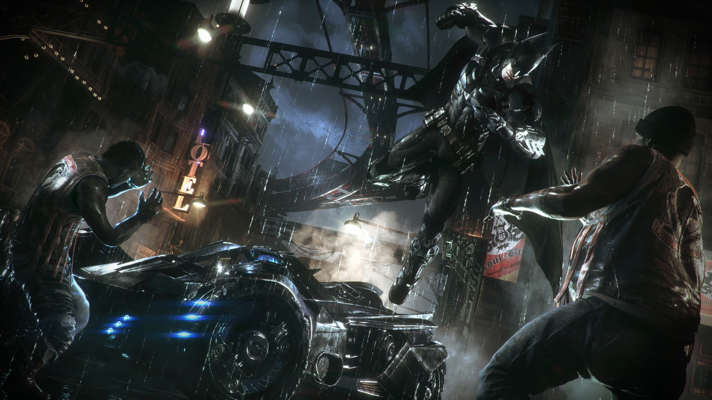 Name: Batman: Arkham Knight
Creator: Rcoksteady Studios
Release date: 2015
Platforms: PC, Playstation 4, Xbox One
[This session was held online in Discord] After a few weeks of indie games, we return to a triple A franchise. With it's atmospheric music and gritty shaders, we discussed the use of the Batman IP within the game world, as well as overused comic book cliches in game. With the game's extensive amount of content and unique mechanics, it is hard to find any fault in such a game made with as much time, effort and love as Batman: Arkham Knight.
-
Mar 30 2020
Disco Elysium

Name: Disco Elysium
Creator: ZA/UM
Release date: 2019
Platforms: PC, Playstation 4, Xbox One
[This session was held online in Discord] The award-winning rpg game, Disco Elysium brought us along a journey of examining desktop game mechanics and text adventure games combined. The interesting UI design, accompanied by a talk by the developers regarding it, serves as a backdrop for us to think about considerations for our own UI designs in future.
-
Mar 23 2020
Thomas was alone

Name: Thomas was alone
Creator: Mike Bithell
Release date: 2012
Platforms: PC, Playstation 4, Android, Xbox One
[This session was held online in Discord] Thomas was alone implored us to examine how an interesting narration can make us invested in the most simplest of character sprites. While the portrayal of female characters in the game has room for improvement, each of the cubic characters are fleshed out well through their abilities and their thoughts. As a puzzle platformer, the game has small accessibility issues and slightly unbalanced difficulty, giving rise to our discussion of how we could improve the game to allow different skill levels to complete such a game.
-
Mar 16 2020
Undertale
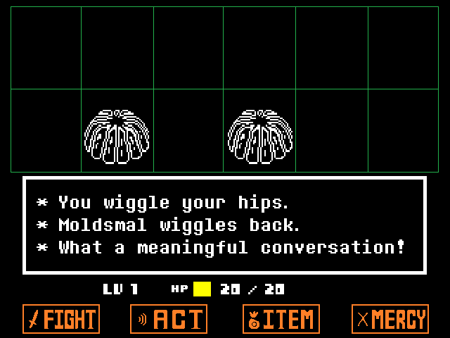 Name: Undertale
Creator: Toby Fox
Release date: 2015
Platforms: PC, PS4, PS Vita, Nintendo switch
Undertale, the intrnational sensation. We discussed how Undertale wins the hearts of so many players with its great sotrytelling and compelling music. Even while it's gameplay may not be for everyone, it's whismical and unique narrative tone is consistently loved by a great number of people. It truly is an insiprational game, not just through its contents, but also through the meta narrative of a single person, working mostly by himself, being able to bring an entire world to life through successfuly creating such an expansive game.
-
Mar 9 2020
Abzu
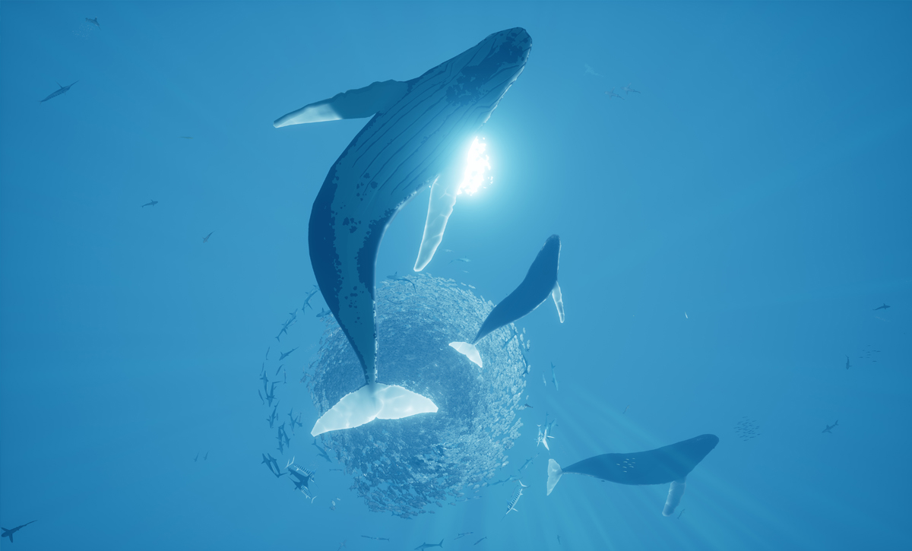 Name: Abzu
Company: Giant Squid
Release date: 2016
Platforms: PC, PS4, Xbox One, Nintendo switch
Diving into the beautiful world that is Abzu, we examined the use of symbols, lighting and leading lines in level design and storytelling. Although it's controls take some getting used to and the gameplay may be dry for some of our members, we all had a good time listening to this talk by the developers on how they solved certain issues they faced with the game.
-
Feb 24 2020
StarCraft
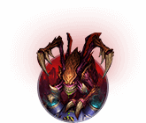 Name: StarCraft
Company: Blizzard Entertainment
Release date: 1998
Platforms: PC, Nintendo64
We explore the original real-time strategy game that started the entire genre and introduced new ways to integrate storytelling with gameplay. While we spent time criticising the limited pathfinding capabilities of this classic, the game also gave us an opportunity appreciate how technology has improved through our lifetime.
-
Feb 17 2020
Sky: Children of the light
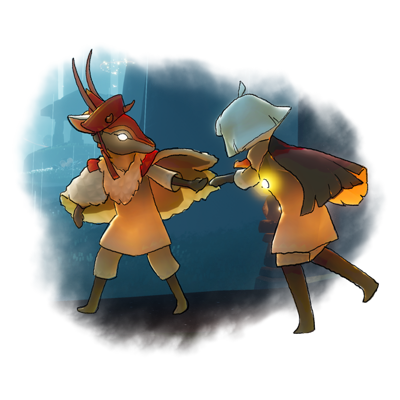 Name: Sky:Children of the light
Company: That Game company
Release date: 2019
Platforms: Xbox One, IOS, Android, Playstation 4
Our first lab session examining a mobile game, ThatSkyGame brought us a journey through cloud shaders, crunchy grass sound effects and slightly troublesome one-handed controls. We discussed the choices made for the game to be mobile and multiplayer, as well as how it might function as a walking simulator instead.
-
Feb 10 2020
Half-life 2

Name: Half-life 2
Company: Valve
Release date: 2004
Platforms: Xbox, Xbox 360, PlayStation 3, PC
We examined this classic for all its firsts in video game history, such as its extensive use of environmental storytelling, lack of cutscene and interactability with physics objects in game. We also spent time appreciating the signposting in the game, where lit areas lead the player towards their next objective. From the occasional trouble the new players in our session faced, there were still some unresolved pathfinding issues in the game.
-
Feb 3 2020
Edith Finch
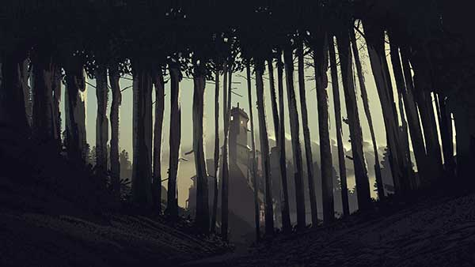 Name: What remains of Edith Finch
Company: Giant sparrow
Release date: 2017
Platforms: Playstation4, Xbox 1, Nintendo switch
This walking simulator brought us a journey through the intricacies of level design, detailed modeling and storytelling. Within the studio session, we managed to complete most of the game. Most of us were extremely taken by how well the level is designed, such that even diverging paths are hidden from view; only to be seen when viewed at a specific angle in game.
-
Oct 30 2019
Hades
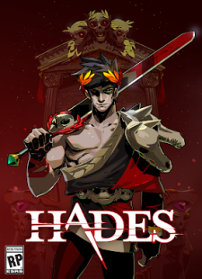 Name: Hades
Company: Supergiant Games
Release date: Early access, 2018
Platforms: PC (Windows)
We explored reasons for the longevity of the Rogue-like genre of games, examining the crucial aspects of games in the genre and how it incorporates forms of progression even while keeping the randomised enemy rooms. We also spent time appreciating the aesthetics of Hades, with its clear colour coded enemy types and telegraphing.
-
Oct 23 2019
BOTW

Name: the Legend of Zelda: Breath of the Wild
Company: Nintendo
Release date: 2017
Platforms: Nintendo Switch, Wii U
We took a deep dive into the graphics system for the creation of campfires and smoke in the legend of zelda game: breath of the wild. We also held a spirited discussion over the various technical exploits used to speedrun the game, and others like it; such as, using the resetting of 3D character models during equipment swap to shift sprite position into outofbounds.
-
Oct 16 2019
Untitled goose & overcooked
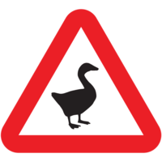 Name: Overcooked
Company: 2016
Release date: Ghost town games
Platforms: Nintendo Switch, PlayStation 4, Xbox 1, PC(Windows)
Name: untitled goose game
Company: House house
Release date: 2019
Platforms: Nintendo Switch, PlayStation 4, Xbox 1, PC(Windows)
We spent a relaxing afternoon discussing unconventional game types and why the Untitled goose game managed to capture the hearts of so many gamers. We also spent some time in overcooked, experiencing for ourselves the phenomenon of going into the "zone", a state of high concentration that any competitive gamers cite as a state of high concentration and performance.
Holiday game jam
Our members are encouraged to participate in a game jam each school holiday. The club will host their own game jam, however, members may also join an external game jam of their choice. Non-members are welcome to join the Game lab's public game jams as well.
-
Bear Jams 2019:
This was a game jam held by the game development club of UC Berkeley.
-
Eclipse jam 2019:
This was the first game jam hosted by NTU Game Lab. It was created as the holiday jam of Dec 2019, and earned its name from the eclipse that was viewable in Singapore a day before the Jam is scheduled to begin.
Club collaborated game
NTU Game Lab is going to create a collaborative game between its members, through the newly introduced Club Game initiative. Members will work together to make a modular, easily modified game that all members of any skill level can contribute content to and build upon.
Games made by club members
The NTU game lab is made up of many talented students who aspire to become great game designers in future. Here are some of their current works, made for school, leisure, work or jams.
Contact Us!
-
Members can submit game titles for consideration for the next studio session here:
-
Join us on our Telegram group!
Or join us on our Discord group!
-
Any questions regarding the club?